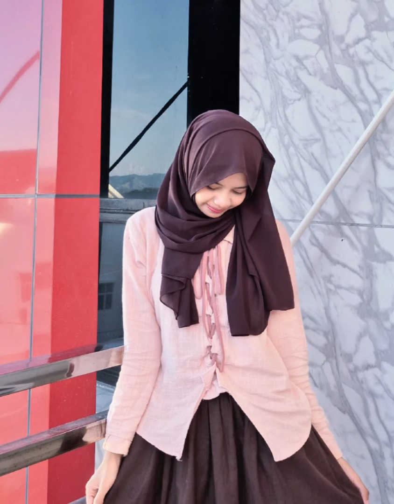

Undangan Digital
Membuat undangan pernikahan digital berbasis web.
Halo, saya Ilda Riani Mahasiswa Informatika, Universitas Sulawesi Barat. bagi saya coding itu seru tapi kalo disuruh asistensikan dan jelaskan kodenya satu-satu, angkat tangan ma saya kak. anu.. ini toh diinikan teruss itunya diitukan. #sahabatClaude #yaapapaoo
SOSIAL MEDIA

Beberapa pengalaman yang telah saya selesaikan baru-baru ini.
Membuat undangan pernikahan digital berbasis web.
Menjadi Panitia di Musyawrah besar informatics study club.
Tugas kelompok: mengajukkan ide tema donor darah dan ikut serta mendesign gambaran aplikasi.